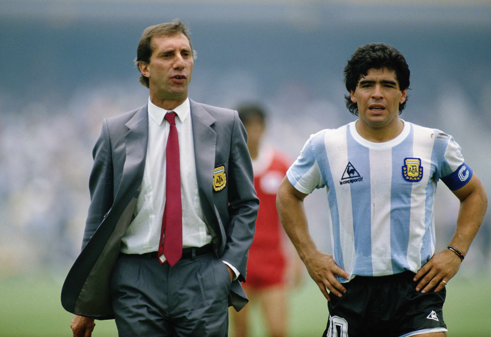

Campeón del Mundo en casa: el Mundial de Argentina de 1978
Argentina ingresó directamente al Grupo 1 de la Copa Mundial de 1978 como sede organizadora de la misma, acompañado por Francia, Italia y Hungría.
En la primera fase disputó sus choques en el Estadio Monumental. En su debut, derrotó 2-1 a Hungría con aciertos de Leopoldo Luque y de Daniel Bertoni, ante un inútil descuento de Károly Csapó. Frente a Francia se repetiría el mismo marcador gracias a los goles de Daniel Passarella y de Leopoldo Luque que hacían insuficiente el tanto francés de Michel Platini. Una posterior derrota ante Italia por 0-1 no imposibilitó la clasificación y accedió como segunda de grupo a la siguiente fase del torneo. Allí esperaría un difícil grupo, compartido con Brasil, Polonia y Perú, de este grupo saldría uno de los finalistas.Tras una victoria 2-0 frente a Polonia, gracias a un doblete de Mario Kempes, y un empate 0-0 ante Brasil, requería de un apabullante resultado contra la eliminada Perú, y dado el caso que sea por una diferencia de cuatro tantos. La albiceleste hizo lo suyo y superó a Perú por un aplastante 6-0 con anotaciones de Alberto Tarantini, Rene Houseman, y dos tantos de Mario Kempes y de Leopoldo Luque. De esta manera, Argentina sumó 5 puntos, los mismos que Brasil pero con mayor diferencia de gol, ya que Argentina consiguió anotar (+8), y Brasil (+5), razón por la cual clasificó a su segunda final de Copa del Mundo.
El partido decisivo ante Países Bajos fue disputado en el Estadio Monumental de Buenos Aires ante 71.000 espectadores que colmaron las gradas. Mario Kempes adelantaría a la albiceleste en el minuto 38, pero a pocos minutos del silbatazo final, la Orange Team empataría el cotejo por medio de Dick Nanninga al minuto 82. Tras los noventa minutos reglamentarios (Rob Rensenbrink estuvo cerca de darle el título a Países Bajos en el último minuto pero su remate se estrelló en el poste), el partido acudió a la prórroga, y una vez más, Mario Kempes marcó otro tanto en el minuto 105, y luego Daniel Bertoni agregó otro gol en el minuto 115 que selló la victoria 3-1 para la Argentina, y su primer título mundial en la historia. Mario Kempes pieza clave del equipo, terminó goleador del torneo con seis goles. Así, Argentina cortaba una racha de 18 años sin la obtención de un título oficial en su selección absoluta, ya que el último logro albiceleste de esa índole había sido en el Campeonato Panamericano de 1960.
Era Bilardo: El ascenso de Maradona y el segundo Campeonato del Mundo
Camino a Mexico
Para sustituir a Menotti, la AFA elige a Carlos Salvador Bilardo, que había ganado el Metropolitano 1982 con Estudiantes de La Plata. Bilardo era famoso por su perfeccionismo y obsesión con la táctica y la estrategia del juego, que llamó la atención tanto de seguidores como críticos. La era de Bilardo comenzó en mayo de 1983 con un empate 2-2 con Chile en Santiago. Poco después Argentina disputó la Copa América 1983, el primer torneo oficial con Bilardo. El equipo fue eliminado en la primera ronda con tres empates (un 2-2 de local y de visitante ante Ecuador; y un 0-0 contra Brasil de visitante), y una victoria (1-0 ante Brasil de local).
El plantel fue formado por futbolistas exclusivamente de la Primera División de Argentina, siendo algunos de ellos los arqueros Ubaldo Fillol y Nery Pumpido, los defensores Néstor Clausen, José Luis Brown, Enzo Trossero, Julio Olarticoechea y Roberto Mouzo; los mediocampistas Claudio Marangoni, Jorge Burruchaga, Alejandro Sabella y José Daniel Ponce; y los delanteros Ricardo Gareca y Alberto Márcico.
Después de la Copa América, Argentina viajó a Calcuta para jugar la Copa Nehru, y luego jugó una serie de amistosos antes de las eliminatorias a la Copa Mundial de 1986 en México. El equipo hizo una gira exitosa en Europa donde ganó los tres partidos jugados, incluyendo un 3-1 contra Alemania Federal en Düsseldorf. En mayo de 1985, Argentina jugó su primer partido de eliminatorias contra Venezuela, ganando 3-2 de visitante. Argentina ganó tres partidos consecutivos, a Colombia (3-1 en Bogotá; y 1-0 en casa) y Venezuela (3-0 de local), pero perdió ante Perú (1-0 en Lima) en un partido, donde el centrocampista peruano Luis Reyna marcó a Maradona al límite del reglamento. Para finalizar, Argentina se enfrentó en el último partido de las eliminatorias contra Perú en Buenos Aires. El equipo visitante ganaba 2-1 clasificando para México, pero en los últimos minutos del partido, una recordada jugada de Daniel Passarella finalizó con el tanto de Ricardo Gareca que señaló el 2-2 definitivo, y que le permitió a Argentina ser uno de los cuatro representantes sudamericanos en México.
A pesar de que dirigió al equipo a una nueva clasificación para una Copa del Mundo, Bilardo fue criticado por los medios de comunicación que se centraron en el bajo nivel del equipo durante el proceso. Algunos periodistas también acusaron a Bilardo de jugar defensivamente, dejando atrás el histórico hito argentino de pases cortos y regates. Clarín, el diario más leído del país, fue uno de los opositores más duros del DT, y el propio Bilardo declaró que Clarín llamó al presidente de la AFA, Julio Grondona, para pedirle que despidiera al entrenador. Antes de la Copa del Mundo, Argentina hizo una gira por Europa, perdiendo con Francia (uno de los favoritos para ganar la Copa) y Noruega, pero derrotando a Israel por 7-2.
Bicampeón del Mundo y Consagración de Maradona: Mundial de México de 1986
Argentina entró en la Copa Mundial de 1986 de México con la esperanza puesta casi exclusivamente en su máxima estrella de ese momento, Diego Maradona. Fue asignada en el Grupo A, junto a Italia, Bulgaria, y Corea del Sur. Hubo cierta lucha entre Maradona y Passarella, debido a que la capitanía del equipo fue traspasada de Passarella a Diego por orden de Carlos Bilardo. Finalmente, Daniel Passarella quedó fuera de la nómina por una gastroenteritis, observada siempre con desconfianza (se llegó a decir que la había provocado Bilardo, que es médico, con un laxante para quitarlo del equipo).
En su debut en la primera fase, Argentina superó 3-1 a Corea del Sur, con el duplicado tanto de Jorge Valdano y el único de Oscar Ruggeri. Ante la recia Italia, el inicial tanto por vía del penal de Alessandro Altobelli fue igualado por Diego Maradona, partido que acabaría empatado 1-1. En el último compromiso selló la clasificación a la siguiente ronda tras triunfar 2-0 ante Bulgaria con goles de Jorge Valdano y de Jorge Burruchaga.
En los octavos de final, el choque frente a Uruguay, depararía otra victoria argentina, que vencería 1-0 con el tanto de Pedro Pasculli. En los cuartos de final, se enfrentó ante Inglaterra, aquí Diego Maradona anotó dos famosos goles, «La Mano de Dios» y el «Gol del Siglo», que contrarrestó al tanto inglés de Gary Lineker. En las semifinales, Argentina derrotó a Bélgica 2-0 tras un nuevo doblete de Diego Maradona para avanzar a su tercera final de Copa del Mundo.
La final fue albergada en el Estadio Azteca ante Alemania Federal. José Luis Brown abrió la cuenta a los 23 minutos, y al minuto 55, Jorge Valdano ponía el marcador 2-0. Sin embargo, la albiceleste se relajó y el equipo de Alemania Federal lograba empatar a balón parado. Al minuto 74, Karl-Heinz Rummenigge anotaba el 2-1 y al minuto 80, Rudi Völler igualaba el marcador. Tres minutos más tarde, Diego Maradona rodeado de adversarios, filtra un magistral pase a Jorge Burruchaga quien marcó el definitivo 3-2, adjudicándose así Argentina su segundo título mundial. Se sacaron seis tarjetas amarillas en este partido, lo que fue una cifra récord hasta la final de 2010.
Argentina permaneció invicto en el torneo, ganando cinco sobre seis partidos en disputa. Maradona jugó a un nivel superlativo, como lo había hecho en el Mundial sub-20 de 1979 liderando a la Argentina al título. Maradona también fue el goleador del equipo con cinco goles, además de ganar la Bota de Oro como el mejor jugador del torneo. El equipo en la final fue: el arquero Nery Pumpido; los defensores José Luis Brown, José Luis Cuciuffo, Oscar Ruggeri; los mediocampistas Julio Olarticoechea; Ricardo Giusti, Sergio Batista, Héctor Enrique, Jorge Burruchaga; y los delanteros Diego Maradona, Jorge Valdano.